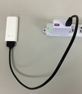
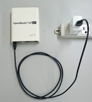
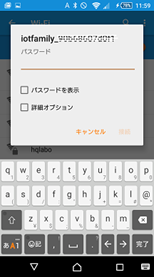
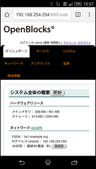
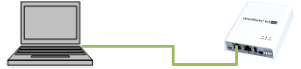

ご利用の前に¶
SIMについて¶
OpenBlocksシリーズにて、搭載可能なSIM形状は一部の型番の物を除きmini-SIM(2FF)です。mini-SIM 対応モデルにてmicro-SIM及びnano-SIMを使用する場合には、脱落防止フィルム有及び接着テープ有でSIMを固定できるアダプタを使用してください。尚、SIMアダプタを使用した場合でのSIMスロットの破損は有償修理対象となります為、ご注意ください。
OpenBlocksシリーズの設置¶
OpenBlocks IoT Family(OpenBlocks IoT VXシリーズは除く)はUSB充電器を外部バスパワー電源として利用するので別途お買い求めください。（USB充電器はPSEマーク付きの国内安全規格品をご利用ください。また、出力電力は1A以上の物を使用してください。） 添付のUSB給電コンソールケーブルを使い本装置とUSB充電器を接続します。
 |
 |
OpenBlocks IoT VX2及びIX9では付属のACアダプタを用いて以下のように接続します。
※OpenBlocks IoT VX2ではワイドレンジ電源入力についてもサポートしておりますので、そちらでの稼働についてもご検討下さい。
{kind=link}
利用可能状態になるとステータスインジケーターが点灯・点滅します。
（表示色はその時の状態によります。）
WEBクライアントの準備¶
注釈
WEBクライアントは日本語設定にて、WEB UIへアクセスしてください。
本装置のWEB UIにアクセスするには、WEBクライアントが必要です。 WEBクライアントにはEthernet使用可能またはWLAN接続可能なPCやタブレット、スマートフォンが利用できます。 WLAN設定時には本装置のアクセスポイント(SSID)を選択し接続します。
WLAN接続の場合¶
SSID接続時 |
WEB画面 |
|---|---|
 |
 |
スナップショットはスマートフォンの画面で、WLANのSSID一覧から本装置のSSID("iotfamily_"本体シリアル番号)を選択した画面です。ここで出荷時デフォルトのパスワード"openblocks"と入力すると接続できます。 WLAN接続できたらWEBブラウザを使い次のアドレスにアクセスします。 ※本体シリアル番号は筐体の背面に記載されています。
WLAN接続時URL |
|
|---|---|
HTTP接続 |
|
HTTPS接続 |
Ethernet接続の場合¶
接続するWEBクライアント(PC)のEthernetポートとOpenBlocksシリーズのeth0ポートをLANケーブルにて直接接続します。

WEBクライアントのIPアドレスを169.254.0.0のネットワークにアクセスできるIPアドレス(169.254.0.100等の200以外)を設定しWEBブラウザにて次のアドレスにアクセスしてください。
※WEBクライアントがWindowsマシンでかつ、対象のEthernetインターフェースがDHCPクライアント設定となっている場合には169.254.0.0のアドレスが自動で設定されます。そのため、IPアドレスの設定は不要です。
Etherrnet接続時URL |
|
|---|---|
HTTP接続 |
|
HTTPS接続 |
※パソコンでのWEBクライアントとして用いるWEBブラウザはGoogle Chrome及びFirefoxの最新バージョンをサポートします。また、Internet Explorerでは一切の操作が行えませんのでご使用しないでください。